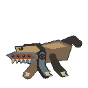
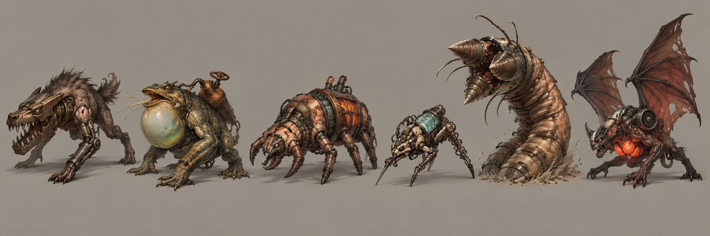
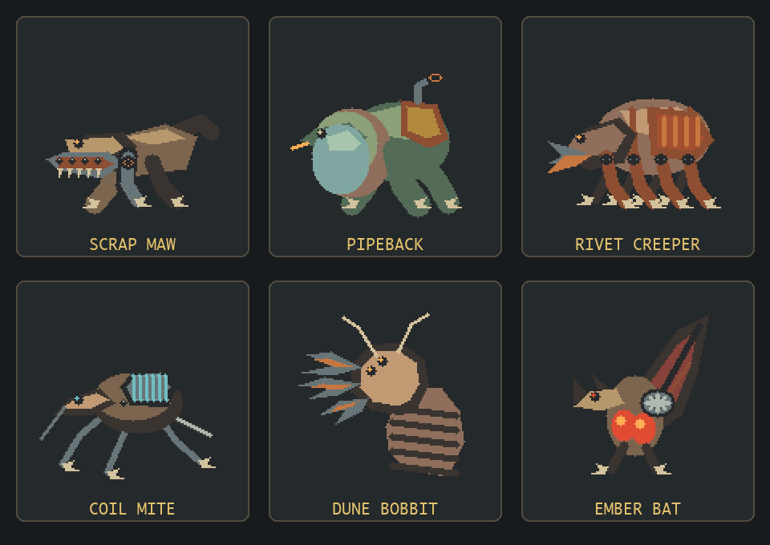
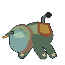
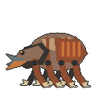
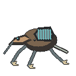
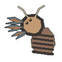
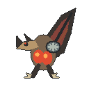

废铁裂颚
冲锋近战。液压下颚负责咬合，活塞前腿负责爆发冲刺。
这轮先审核造型语言。确认后才会制作移动、攻击、受击与死亡动画，以及剩余阵容。
原画用于比例、材质和轮廓参考，不直接缩放成游戏素材。

以下是 128×128 坐标绘制的静态基准姿势，用来判断缩小后是否仍能一眼分辨。


冲锋近战。液压下颚负责咬合，活塞前腿负责爆发冲刺。

中距喷吐。喉囊先膨胀，背部压力阀泄压后才发射。

重型推进。多足贴地爬行，双铆钉颚连续敲击车体。

迅捷骚扰。弹簧腿急停变向，背部线圈蓄能后短距放电。

地下伏击。三枚钻颚分层闭合，身体留在地下形成拉扯感。

俯冲猎手。胸囊发光提示俯冲，单侧涡轮改变飞行轨迹。